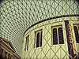

When, while the lovely valley teems with vapour around me, and the meridian sun strikes the upper surface of the impenetrable foliage of my trees, and but a few stray gleams steal into the inner sanctuary, I throw myself down among the tall grass by the trickling stream; and, as I lie close to the earth, a thousand unknown plants are noticed by me: when I hear the buzz of the little world among the stalks, and grow familiar with the countless indescribable forms of the insects and flies, then I feel the presence of the Almighty, who formed us in his own image, and the breath of that universal love which bears and sustains us, as it floats around us in an eternity of bliss; and then, my friend, when darkness overspreads my eyes, and heaven and earth seem to dwell in my soul and absorb its power, like the form of a beloved mistress, then I often think with longing, Oh, would I could describe these conceptions, could impress upon paper all that is living so full and warm within me, that it might be the mirror of my soul, as my soul is the mirror of the infinite God!
O my friend -- but it is too much for my strength -- I sink under the weight of the splendour of these visions! A wonderful serenity has taken possession of my entire soul, like these sweet mornings of spring which I enjoy with my whole heart.